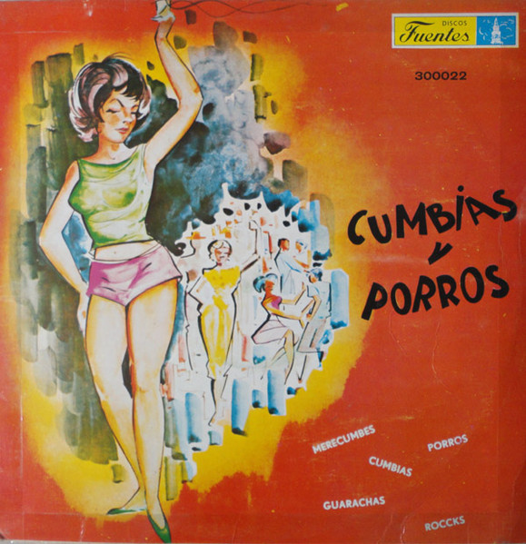

LP
Cumbias Y Porros
Various
Media: — · Sleeve: —
—
Personal
Discogs SuggestedCA$43.78
Discogs MedianCA$43.78
Discogs HighCA$43.78
- Physical Copy ID
- BB-LP-338
- Year
- 1975
- Label
- Discos Fuentes
- Catalog #
- 300022
- Country
- Colombia
- Genre / Style
- Latin · Cumbia, Porro, Vallenato